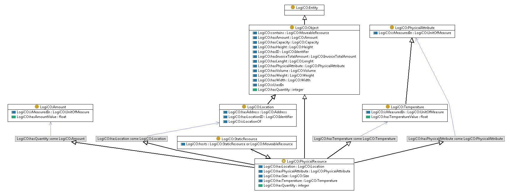

http://ontology.tno.nl/logico#StaticResource
Class LogiCO:StaticResource

rdf:type
owl:Class
rdfs:comment
A Static Resource is a Physical Resource that is used to handle moveable objects in a facility prior to their transportation.
rdfs:subClassOf
LogiCO:PhysicalResource
References
as owl:disjointWith (
LogiCO:MoveableResource
)
as owl:equivalentClass (
LogiCO:PhysicalResource
)
as rdfs:domain (
LogiCO:hosts
)
as rdfs:range (
LogiCO:hosts
)
as rdfs:subClassOf (
LogiCO:StaticEquipment
,
LogiCO:FacilityStructure
,
LogiCO:Facility
)
Generated with
TopBraid Composer
by
TopQuadrant, Inc.